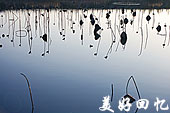

风土人情
舌尖美食
名胜古迹
美好回忆
联系我们
tip：
The Menu

武宁介绍
武宁县位于江西省西北部，地处赣鄂边界。南起北纬28°51′，北至北纬29°3′；西起东经114°28′。东至东经115°26′。 北隔幕阜山脉与湖北省阳新、通山两县为邻，东北界瑞昌市，东连德安、永修两县，南隔九岭山脉与靖安县交界，西和西南与修水县相连。
武宁经济快速发展，已初步建成农业为基础、工业为指导、第三产业繁荣、基础设施日趋完善的经济体系。农业随着农村联产承包责任制的实施和农业产业结构的不断调整，出现了总量增加、结构优化、效益提高的可喜局面，逐步成了粮油、畜禽、水产、林果等支柱产业，并开始朝着产业化方向发展。工业由解放前的一张白纸发展到以矿产采掘加工、电力、罐头食品、轻化建材、农林产品加工为支柱的工业经济体系，尤其是食品罐头和有色金属享誉国内外。个体私营企业如雨后春笋蓬勃发展。
全县矿产资源储量十分丰富，金属矿产有钨、锑、铜、铁、锡、铅、钒、镓、钡、铍、镍、钴、钛、汞等，非金属矿产有瓷土、陶泥、大理石、花岗石、石灰石、石英石、白云岩、水晶石等，能源矿产有煤及地下热水等。其中煤、钨、锑、大理石等为主要矿产，已探明煤储量4000万吨，钨金属含量4万吨，锑金属含量10 万吨，大理石14万立方米。全县水域面积422064亩，可养殖水面32万亩，已开发水面10.86万亩， 发展水产业前景十分广阔，全县现有鱼类67种。
武宁为全省中华猕猴桃主要产地之一，猕猴桃资源分布在 21 个乡镇，210个村，年产量750吨，最大单果221.4克，为全国之最。“武宁黑芝麻”荣获全国第二届农业博览会金奖。此外，还有丰富的“宁红”茶、香菇、板笋、小竹笋、蜂蜜等土特产品。
[更多]
武宁景点
武宁县境内有浩瀚百里、绿岛如莲，被誉为“江西万岛湖”的生态柘林湖；有峰峦叠翠风景图、沟壑流泉、悬崖怪石，被称为“百里芙蓉帐”的武陵岩森林公园；有景致迷人、风俗独特、倚临九宫山、极赋药疗价值的上汤温泉；有寺院庄严、香火鼎盛、享誉海内外的佛教圣地杨洲弥陀寺；有富于神秘色彩的太平山道教佑圣宫；有道路幽险、奇峰绝壁、充满神奇传说的吴王峰；有深藏山腹、石柱林立、喀斯特岩溶地貌的鲁溪洞。以丰富的山水资源为优势，大力发展了生态旅游业，协和公园、武陵岩峡谷漂流、辉华山庄、神雾山、剑尧岛、鲁溪洞、艾园等14个景点已对外开放，投资1.2亿元的步红休闲娱乐城、亚洲最大的石雕观音、太平山等15个景点即将建成开。
武宁县四季皆宜旅游。武宁县属于亚热带季风气候，其特点：气候温和湿润，四季分明，雨水充沛，霜期较短，春季温湿，夏季炎热，秋季干爽，冬季阴寒。县境内温差不大，全年平均气温为16.6摄氏度。因位于季风地区，冬季受西伯利亚强冷空气的侵袭，以1月份气温最低，平均气温为4.4摄氏度。7、8月份气温最高，平均气温分别为28.2摄氏度，27.9摄氏度。
[更多]
拱桥之乡
八音公园
绚丽夜景
天堑通途
朝阳湖公园
豫宁公园
观音岛
鲁溪洞
西海风光